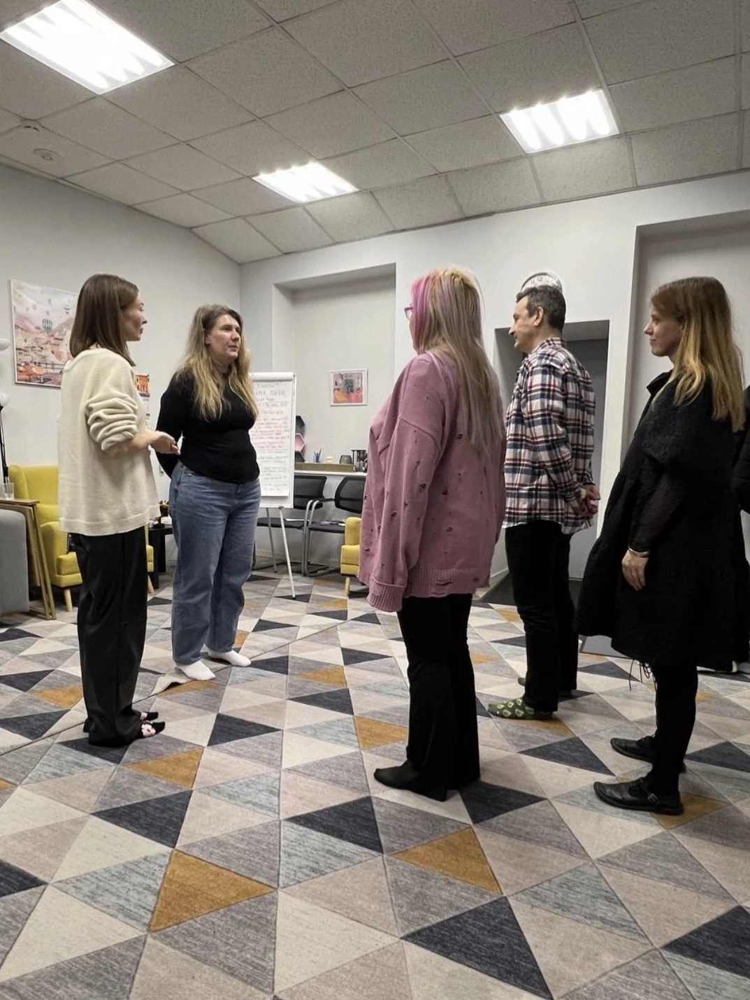
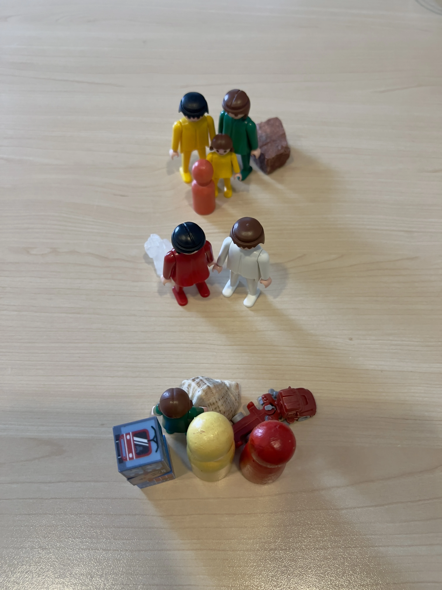

Глубина.
Метод расстановок позволяет работать со скрытыми бессознательными процессами, в том числе с родовыми сценариями, которые не осознаются, но сильно влияют на качество жизни.
Решение проблем в отношениях методом системных семейных расстановок
Верните себе гармонию и счастье.
Системные расстановки — это лучший инструмент для решения проблем в отношениях в паре и семье.
Записаться на расстановкуВ расстановках клиент и его жизненная ситуация представляются как система со всеми её явными и скрытыми взаимосвязями.
Часто проблема человека связана не только с его личностью, но уходит корнями в динамику всей семейной системы.
Задача расстановки — не просто решить конкретную проблему, а трансформировать саму систему так, чтобы в ней появился порядок и баланс.
Такой подход обеспечивает глубину и даёт долгосрочный результат.
Метод расстановок позволяет работать со скрытыми бессознательными процессами, в том числе с родовыми сценариями, которые не осознаются, но сильно влияют на качество жизни.
Расстановка — это не магия, не волшебная таблетка, но работа, близкая к шаманской, позволяющая менять полевые процессы и системные структуры.
Расстановки дают результат быстрее, чем классическая длительная терапия. В большинстве случаев для изменений и результата достаточно одной расстановки.
«хочу забыть бывшего / бывшую», «хочу выйти из отношений», «мне просто плохо», «хочу экологично прожить развод»
«хочу отпустить прошлое», «не могу начать новые отношения», «преследуют мысли о прошлом»
«повторяю одни и те же ошибки в отношениях», «чувствую, как будто живу не свою жизнь»
«не могу найти своего человека», «постоянно выбираю не тех»
«хочу сохранить семью», «кризис в отношениях», «постоянные ссоры и конфликты»
«меня обесценивают», «боюсь своего партнёра и не знаю, как ему противостоять»
«я узнал(а) об измене: не могу простить», «постоянно попадаю в любовные треугольники», «не могу выйти из любовного треугольника»
«боюсь быть отвергнутым», «боюсь потерять партнёра», «мне плохо из-за ревности: я постоянно ревную или ревнуют меня»
«хочу замуж», «хочу родить здорового ребёнка», «не получается забеременеть»
«теряю себя в отношениях», «не могу уйти из отношений, хотя в них мне плохо»
«мне сложно сближаться», «чувствую себя одиноко», «не могу построить длительные отношения»
«отношения с роднёй невыносимы», «меня не слышат», «боюсь отцовского гнева», «не могу справиться с маминой навязчивостью», «семья на меня давит»
«ребёнок раздражает», «срываюсь на ребёнка», «с ребёнком нет взаимопонимания», «ребёнок грубит», «ребёнок постоянно играет в компьютер»
«конфликтую с коллегой», «сложно находить общий язык с руководителем», «на работе токсичная атмосфера», «не получается выстроить личные границы с клиентами»
С помощью системных расстановок можно также решать запросы, связанные со здоровьем (психосоматикой), лишним весом, химическими и нехимическими зависимостями, деньгами.
Одна расстановка может кардинальным образом изменить ситуацию.
Это уникальная помогающая практика, работающая там, где другие методы бессильны.
Начать знакомство со мной и с расстановками можно на диагностической сессии.
На ней мы разберём ваш запрос и составим генограмму (схему семейной системы).
А также я отвечу на интересующие вас вопросы о расстановках.
30–40 минут онлайн в Zoom.
Онлайн-формат доступен клиентам из любой точки мира.
* Генограмма — это схема, которая визуализирует семейную систему: родственные связи, ключевые события. Это не просто генеалогическое древо, а «карта» эмоциональных процессов, передающихся в семье из поколения в поколение.
Клиент озвучивает свой запрос и вместе с расстановщиком выбирает из участников группы так называемых заместителей — тех, кто будет исполнять роли элементов системы.
Располагает их в пространстве согласно своим ощущениям.
И вот здесь начинается «самая магия»: заместители начинают вести себя, чувствовать, двигаться и даже разговаривать так же, как реальные члены семьи клиента.
На самом деле, в этом нет ничего магического.
Способность чувствовать других, незнакомых людей называется заместительским восприятием и присуща каждому.
В ходе расстановки проявляются значимые для данного запроса взаимосвязи, которые можно трансформировать через определённые технические приёмы.
В результате система качественно меняется.
Вы уносите с собой результат на телесном и энергетическом уровне.
Расстановка запускает движение в системе.
В жизни могут начать происходить события, способствующие решению запроса, с которым вы обратились.
До конца понять, что такое расстановка, можно только поучаствовав в ней.
Записаться на расстановку





Изменения начинаются сразу. Вот что говорят клиенты о своём состоянии после сессии:
Расстановка — это встреча с правдой. И эта правда делает вас свободнее.
Качество расстановки во многом зависит от ведущего (расстановщика), его опыта и личности.
В работе со мной вы можете рассчитывать на бережность, глубину и профессионализм.
Я не давлю авторитетом, не тороплю, не навязываю концепций, не устраиваю из расстановки шоу.
Работаю строго в интересах и на благо клиента.
Стараюсь быть максимально открытой и даю возможность полевым процессам раскрываться в полной мере.
Собираю камерные группы 7–10 человек, в которых поддерживаю атмосферу теплоты, принятия и безопасности.
Дипломы и сертификаты — в миниатюрах галереи. Переключайте стрелками или выбирайте нужный документ.
На сегодня существуют разные форматы проведения расстановок:
Вы можете выбрать вариант, удобный для вас.
Продолжительность 1–1,5 часа, в Zoom.
5000 руб.
Выбрать1,5–2 часа в Zoom.
7000 руб.
ВыбратьПродолжительность 1,5–2 часа, запись минимум за неделю.
12000 руб.
ВыбратьГарантия конфиденциальности.
Расстановка — это не магия, не волшебная таблетка.
Это работа, близкая к шаманской, позволяющая менять полевые процессы и системные структуры.
В основе — заместительское восприятие, способность чувствовать других людей, которая присуща каждому.
В большинстве случаев для изменений и результата достаточно одной расстановки. Одна расстановка может кардинальным образом изменить ситуацию.
Клиент озвучивает запрос и вместе с расстановщиком выбирает из участников группы заместителей — тех, кто будет исполнять роли элементов системы.
Заместители начинают вести себя, чувствовать и двигаться так же, как реальные члены семьи клиента.
В ходе расстановки проявляются значимые для запроса взаимосвязи, которые трансформируются через технические приёмы.
Индивидуальная расстановка на фигурках онлайн в Zoom — 1–1,5 часа.
Групповая расстановка с заместителями онлайн в Zoom — 1,5–2 часа.
Групповая расстановка с заместителями очно в СПб — 1,5–2 часа.
Индивидуальная расстановка на фигурках онлайн в Zoom — 5000 руб.
Групповая расстановка с заместителями онлайн в Zoom — 7000 руб.
Групповая расстановка с заместителями очно в СПб — 12000 руб.
Диагностическая сессия — 1200 руб. (вместо 3500 руб.).
Это знакомство со мной и с расстановками. На ней мы разберём ваш запрос и составим генограмму (схему семейной системы).
А также я отвечу на интересующие вас вопросы о расстановках.
30–40 минут онлайн в Zoom.
Генограмма — это схема, которая визуализирует семейную систему: родственные связи, ключевые события. Это не просто генеалогическое древо, а «карта» эмоциональных процессов, передающихся в семье из поколения в поколение.
Да. Индивидуальные расстановки на фигурках и групповые расстановки с заместителями проводятся онлайн в Zoom. Очно — в СПб.
Я, Ольга. На протяжении 15 лет я регулярно участвовала в расстановках в качестве заместителя, нарабатывая навык чтения поля.
Окончила двухлетнюю программу обучения системным семейным расстановкам в Санкт-Петербургском институте травматерапии «Исток».
Продолжаю обучаться различным приёмам и техникам системной терапии у ведущих мастеров этого дела.
Да. Собираю камерные группы 7–10 человек, в которых поддерживаю атмосферу теплоты, принятия и безопасности.
Ясность, облегчение, свободу, спокойствие, любовь.
Запишитесь на диагностику за 1200 3500 рублей и узнайте, как системные переплетения в роду влияют на нынешние отношения.